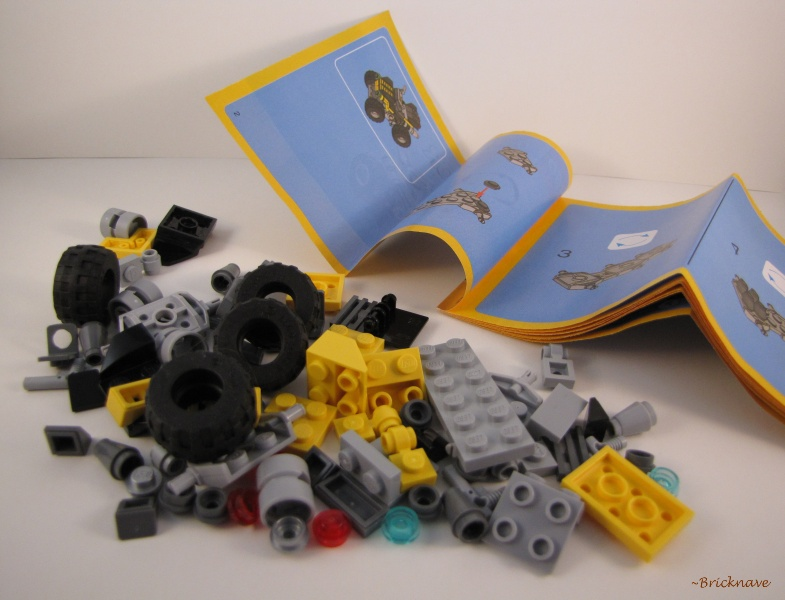
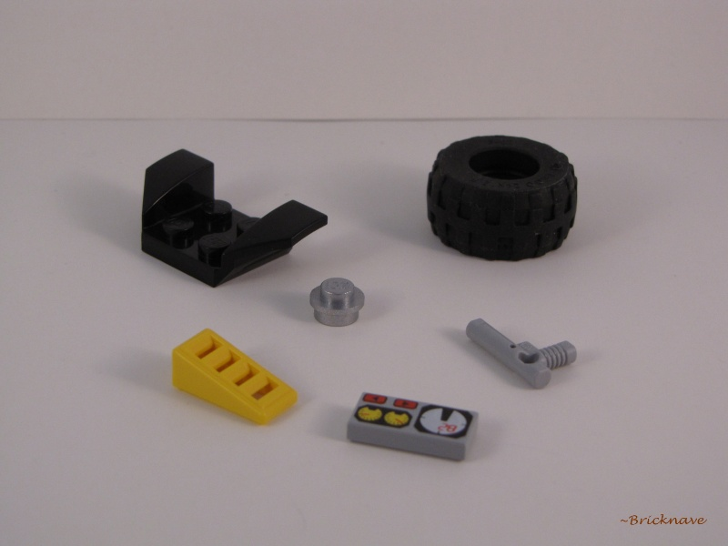
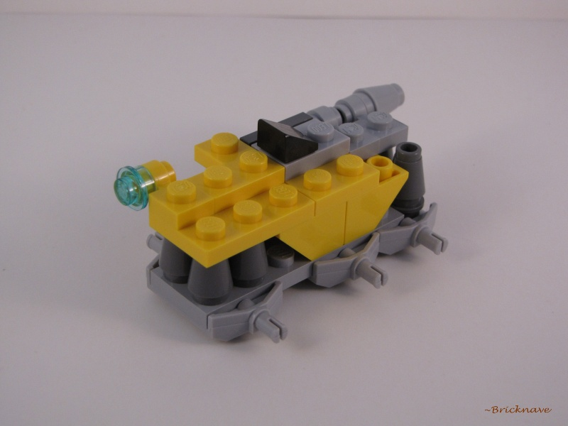
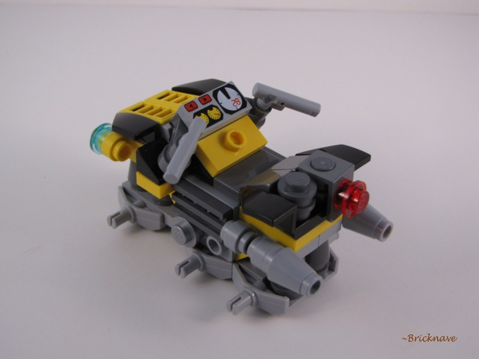
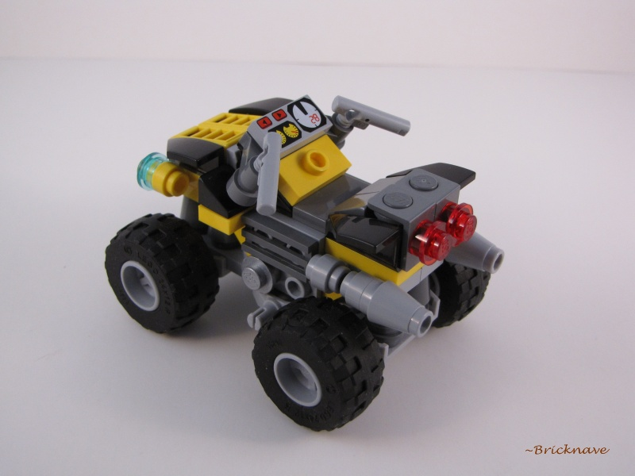

Set Name: 4x4 Dynamo
Set Number: 20014
Theme: Creator
Year released: 2010
Price: Considering that this was a Brickmaster Polybag Set, $6.00 is the estimated price.
Piece Count: 69
Minifigures Included: 0
Additional Information: This was the March-April 2010 Brickmaster Polybag Set. This model is a non-Minifigure-Scaled ATV / Quad-Bike.
-Contents-

Inside the Polybag is what you will usually find in an average LEGO Polybag - LEGO Bricks in smaller Polybags and an instruction booklet.
I have discarded the smaller Polybags after releasing the bricks they contained.
Nothing special at all about the booklet by the way -- no advertisements for other Creator sets at all.

The pieces shown above are the most interesting in my opinion.
-The Build-

The build is more challenging than other small Polybag Sets, which is good.

-The Model itself-

Although not meant for Minifigures, it has a high value in playability.